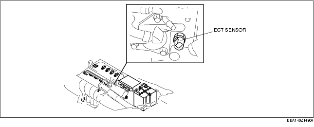
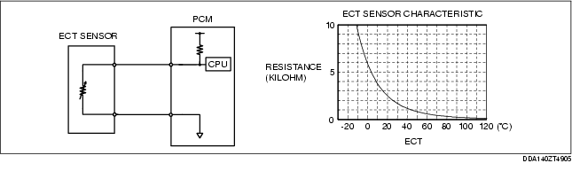

• Installed on the cylinder head.

• A thermistor type is used and the resistance changes according to the ECT.
• As shown in the characteristics graph, when the ECT is high, the resistance is small, and when the ECT is low, the resistance is large.
